In Corpore Sano!- Mensana's slogan
While Aurasphere Corp. is Apeiron's richest corporation, and Halkeiro its most sprawling one, Mensana Transhuman Biotechs Inc. certainly wins the palm as being Apeiron's most important corporation. Its specialization in the domains of pharmaceutics and food production makes it one of the corporation you will have to call for the most often compared to all the other ones, as even just buying a coffee at the vending machine is a small gesture towards the behemoth of Apeiron's food industry.
History
Mensana Corp. was born in the very first years of the Post-Heliostat era. It started as a simple laboratory of research on biotechnologies, which came to Neo-Caryonite in the middle of the Heliostat-induced ice age to search for a way to help endangered ecosystems thrive despite the current conditions. This laboratory would eventually, as you might have guessed, discover the world-famous diastrophin, and create the small city of Zandara-4.
When a worldwide health crisis was declared in 2 PC, issuing the order to all diastrophin facilities to stop all their activities temporarily, the laboratory reconverted part of its premises to start research over a possible cure for MDS-5's devastating effects. No true remedy would ever be found, but the laboratory found numerous ways to at least mitigate or slow down its destructive effects. Many of these new substances proved very effective against other ailments as well - which sparked the idea of selling them as other kinds of medication. Quickly, the corporation grew so dependent on their production of pharmaceutics that they would make it their primary business.
In 153 PC, in the heart of the MDS invasion, the corporation struck a deal with Infinium City's local robotics companies for the conception of rough prototypes of mechatronic body augments, to help the armed response unit in their task. The augments proved highly effective, and as such the corporation started developing more sorts of body augments - which would eventually split from Mensana Corp. and eventually become Tetractys Mechatronics Co.
Activities
Mensana Transhuman Biotechs Corp. operates in a very restricted panel of domains, but their importance and omnipresence in daily life effectively makes the corporation a staple part of the day-to-day life. They handle most of Apeiron's agriculture, processing and distribution of synthetic foods, the pharmaceutical industry, and work in close partnership with Tetractys for R&D around body augments.
A brand known to any and all within the eperopolis is Karbonaton, a trademark under which are sold many foods based on a nutrient blend known as Glystabio-2.27. Most foods sold under that brand name are usually very sweet, pleasantly invigorating, and flavored of fruits.
Another brand that is a bit less common but just as famous is Orthodia, the brand under which the corporation sells its various diastrophin-based first aid products. It was discovered in the first days of the MDS invasion that at very small doses, diastrophin seems to interfere positively with regeneration of trauma and small wounds, as long as it is in amounts small enough to prevent development of harmful and potentially malignant mutations. The most famous product of the range is the Orthodia Capsule, a glass vial filled with a reddish fluid which can be directly applied to a wound using a cotton wool, with antiseptic and regenerative properties.
